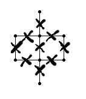
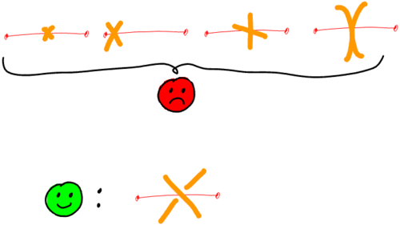

Un grafo è costituito da vertici collegati da archi. È planare quando può essere disegnato su un foglio di carta senza incrociare i archi.
Ogni grafo planare codifica un nodo (un intreccio). Ad esempio, il nodo del trifoglio è codificato da un triangolo:

I grafi sono molto facili da fare. Una grande classe di grafi è persino chiamata "disegni dei bambini" dai matematici. Ecco un grafo. L’intreccio associato è stato scelto come simbolo di buon auspicio nel buddismo.

La procedura per costruire il nodo che codifica si svolge in quattro fasi:

- Metti una croce al centro di ciascun arco.
- Collegare le estremità piccole insieme.
- Tira fuori la parte superiore / inferiore.
- Espandi il modello.
Ecco un altro esempio:

Ma torniamo passo dopo passo al nostro simbolo buddista. Innanzitutto, mettiamo una croce nel mezzo di ciascun arco:
È importante disegnare bene le croci in modo che non vi siano ambiguità sulla direzione in cui punta un pezzo. In particolare, non solo mettere una piccola linea al centro del bordo, o solo una delle due linee, per far apparire l’intero incrocio. Ogni filo deve essere inclinato rispetto al arco: né troppo piatto né troppo dritto, tra 30 e 60 °.

 È ora necessario collegare le estremità piccole che sporgono tra di loro. Per fare questo, pensa al tuo grafo come un labirinto, in cui ogni arco è un muro, trafitto da un porta nel mezzo. Dall’altra parte della porta c’è l’attraversamento.
È ora necessario collegare le estremità piccole che sporgono tra di loro. Per fare questo, pensa al tuo grafo come un labirinto, in cui ogni arco è un muro, trafitto da un porta nel mezzo. Dall’altra parte della porta c’è l’attraversamento.
 Scegli un’estremità, punta in una direzione, segui il muro in quella direzione, gira l’angolo, segui il muro, fino a raggiungere un’altra porta, un altro incrocio e tra i collegamenti a terra, uno in particolare punta verso di te, questo è quello a cui devi connetterti.
Scegli un’estremità, punta in una direzione, segui il muro in quella direzione, gira l’angolo, segui il muro, fino a raggiungere un’altra porta, un altro incrocio e tra i collegamenti a terra, uno in particolare punta verso di te, questo è quello a cui devi connetterti.

Fai attenzione a non provare a saltare i passaggi e indovina troppo rapidamente dove ti porterà un filo. Sii sciocco e disciplinato, applica il metodo alla lettera. Se c’è un incrocio che non si trova nel mezzo di un bordo, c’è un problema. Se un filo attraversa un muro, c’è un problema: devi attraversare la porta, come persone civili. Non creare nuovi fili agli incroci, usa quelli che sono già lì. Collegati al primo filo che ti appare lungo il muro, non il secondo né il terzo: il primo. Una volta superato questo stadio, attenua il percorso di ciascun filo.
 Terzo, devi decidere ad ogni incrocio che è sopra, che è sotto. Puoi scegliere casualmente il primo e seguire il filo alternativamente sopra / sotto. Può funzionare per piccoli motivi, ma non appena ti imbarchi in grandi composizioni, vedrai che è insostenibile e che si finisce sempre per avere una metà del disegno che è in conflitto con un’altra metà.
Terzo, devi decidere ad ogni incrocio che è sopra, che è sotto. Puoi scegliere casualmente il primo e seguire il filo alternativamente sopra / sotto. Può funzionare per piccoli motivi, ma non appena ti imbarchi in grandi composizioni, vedrai che è insostenibile e che si finisce sempre per avere una metà del disegno che è in conflitto con un’altra metà.
Fortunatamente, esiste un metodo sicuro e innocuo:
 Copia la piccola guida di fronte in un angolo del foglio e strappala. Scegli un arco del disegno e ruota la piccola guida in modo che i due archi siano allineati. La guida ti dice quale filo è sopra e quale sotto. Fallo per tutti i archi.
Copia la piccola guida di fronte in un angolo del foglio e strappala. Scegli un arco del disegno e ruota la piccola guida in modo che i due archi siano allineati. La guida ti dice quale filo è sopra e quale sotto. Fallo per tutti i archi.
Un altro modo di vedere le cose è allineare l’arco con la sua vista, immaginare di salire su un vertice, guardare la traversata. Dei due fili incrociati, uno viene dalla tua destra, l’altro dalla tua sinistra. Immagina di prenderli in mano e incrociare le braccia, la sinistra (ad esempio) che passa sopra la destra.

 L’ultimo passo è ispessire l’interlacciamento. Pensa ai fili che hai costruito come la linea bianca nel mezzo di una strada e le croci come ponti. Inizia costruendo i ponti in modo da sapere da dove cominciare e dove fermarti, quindi disegna il lato destro e il lato sinistro della strada da un ponte all’altro.
L’ultimo passo è ispessire l’interlacciamento. Pensa ai fili che hai costruito come la linea bianca nel mezzo di una strada e le croci come ponti. Inizia costruendo i ponti in modo da sapere da dove cominciare e dove fermarti, quindi disegna il lato destro e il lato sinistro della strada da un ponte all’altro.
Ora sei pronto per alcuni esercizi.